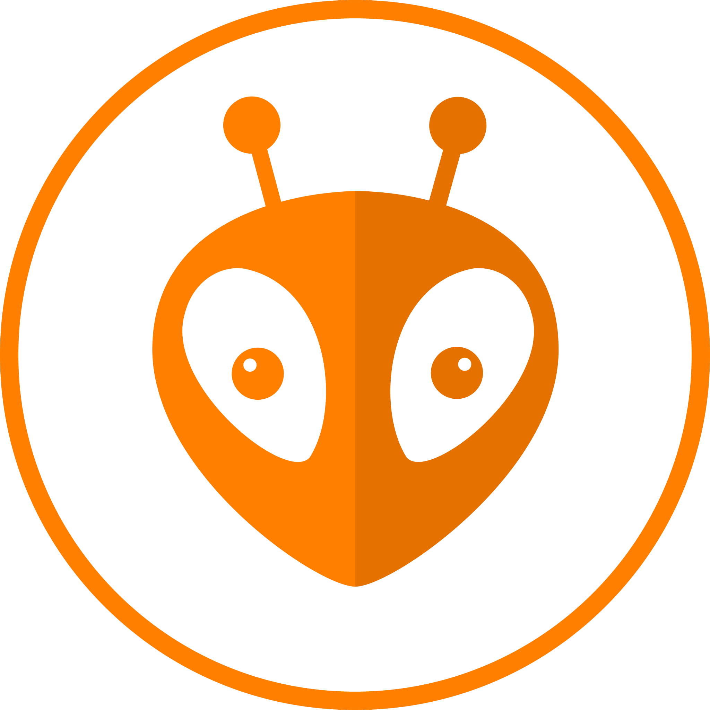
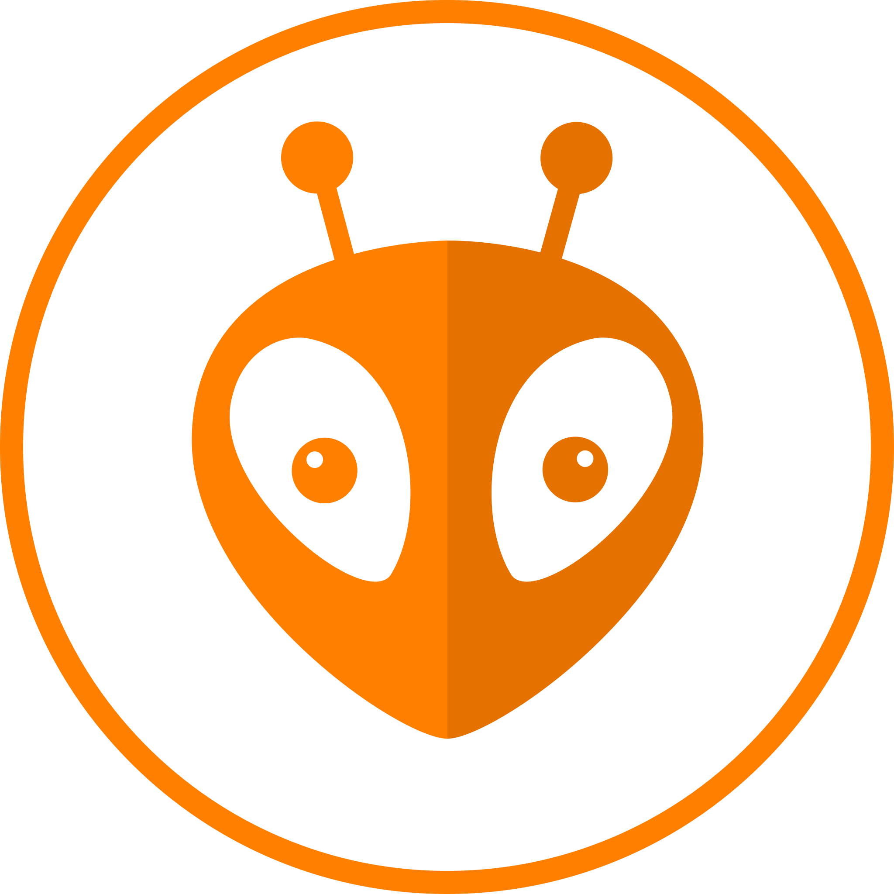

Who am I?
I'm a Mechatronics Engineer who likes to build new stuff, mostly especialized in embedded software, where I developed professional, academic and personal projects with the purpose of increase my engineering skills and knowledge. Passionate about building new stuff and automating boring tasks, learning new skills everyday and become a high demand engineer.
Main interests: Embedded systems, hardware design, computer vision, robotics, artificial inteligence and electronics.


 
